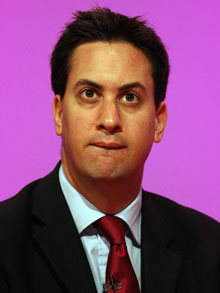

Tuesday, September the 28th, 2010
back to: title, date or indexes
P is for Piffle
Some people do spout the most extraordinary piffle, and I suppose we should expect the words of politicians to be particularly piffle-strewn. Consider this, reported in today's Grauniad:
“One of his shadow cabinet allies insisted Ed Miliband was growing in stature as a leader by the hour.”
By the hour? He became the Labour Party leader on Saturday afternoon, and if we grant that to get elected in the first place he must already have demonstrated just a teensiest smidgen of leadership quality, what on earth must he be like by now, and what will he be like in a week's and a month's time? Assuming the next general election takes place in 2015, and his stature continues to grow by the hour, he will have become a mighty potentate, a modern Ozymandias, King of Kings!

Young Ned Miliband, soon-to-be Supreme And Majestic Potentate Of The Universe